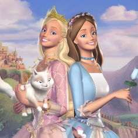
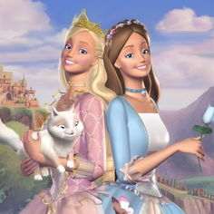

A Barbie é muito mais que uma boneca: ela é um ícone cultural que representa estilo, liberdade e criatividade. Desde sua estreia em 1959, Barbie tem inspirado gerações a sonhar grande e explorar diferentes caminhos, mostrando que é possível ser tudo o que se deseja — do mundo da moda às carreiras mais ousadas.
No universo da Barbie, o rosa é a cor que simboliza confiança, charme e originalidade. Ela usa essa cor para expressar personalidade, seja em roupas, acessórios ou no próprio design de seu mundo. Mais do que um brinquedo, Barbie é um símbolo de empoderamento e expressão pessoal, encorajando todos a abraçarem quem são com estilo e leveza.
Além disso, a Barbie estimula a criatividade: cada boneca, cada cenário e cada história são convites para inventar mundos, contar histórias e imaginar possibilidades infinitas. Assim como no Pinkology, o universo da Barbie mostra que a vida pode ser divertida, colorida e cheia de ideias, sempre com uma pitada de rosa e muita personalidade.
.png)
.png)
.png) 

Marie é a doce gatinha branca de “Aristogatas”, conhecida por sua personalidade charmosa, elegante e cheia de atitude. Desde sua estreia nos clássicos da Disney, Marie conquistou corações ao representar graça, confiança e delicadeza, mostrando que até os pequenos gestos podem ter grande estilo.
No universo da Marie, o rosa é a cor da fofura e da sofisticação, refletida em seu laço rosa icônico e em sua postura delicada. Ela ensina que é possível ser amável e confiante ao mesmo tempo, combinando charme e personalidade.
Além disso, Marie inspira criatividade e imaginação: crianças e fãs podem inventar histórias, desenhar cenários e se divertir com sua presença graciosa. Assim como o Pinkology celebra o rosa como expressão de estilo, arte e diversão, a Gatinha Marie é uma referência de elegância e ternura, mostrando que o rosa também pode ser sofisticado e cheio de personalidade.
.png)
.png)
.png)
Pinkie Pie é a ponteira da diversão e da alegria no mundo de My Little Pony. Conhecida por seu humor contagiante, energia infinita e amor por festas, ela representa criatividade, entusiasmo e espontaneidade. Desde sua estreia, Pinkie Pie inspira todos a encontrarem alegria nas pequenas coisas e a celebrarem cada momento com intensidade.
No universo da Pinkie Pie, o rosa é a cor da felicidade e da imaginação, refletida em sua crina vibrante e em suas roupas e acessórios lúdicos. Ela ensina que ser criativo e ousado é uma forma de se expressar e espalhar positividade.
Além de diversão, Pinkie Pie estimula a criatividade e a colaboração: inventar histórias, decorar festas e criar brincadeiras são atividades que despertam o imaginário, reforçando que a vida pode ser divertida, colorida e cheia de possibilidades, sempre com uma pitada de rosa e muita personalidade.

.png)
.png)
.png)
A Princesa Aurora é um símbolo de elegância, graça e delicadeza no universo Disney. Desde sua estreia em A Bela Adormecida, Aurora encantou gerações com sua gentileza, charme e postura real, mostrando que a verdadeira nobreza vem tanto da aparência quanto do coração.
No mundo de Aurora, o rosa é a cor da serenidade e da magia, refletida em seu icônico vestido rosa e nos elementos encantados que cercam sua história. Ela ensina que é possível combinar beleza, elegância e força interior, tornando cada gesto e decisão significativos e memoráveis.
Além disso, Aurora inspira criatividade e imaginação: cenários mágicos, castelos e contos de fadas oferecem espaço para criar histórias, desenhar aventuras e explorar mundos encantados. Assim como o Pinkology celebra o rosa como símbolo de estilo e fantasia, a Princesa Aurora mostra que o rosa também é sinônimo de encanto, delicadeza e imaginação sem limites.
Penélope Charmosa é o ícone da elegância veloz e do charme em movimento. Conhecida por seu carro cor-de-rosa e seu estilo impecável, ela conquistou gerações desde sua estreia em Corrida Maluca — sempre mostrando que feminilidade e coragem podem andar lado a lado, inclusive em alta velocidade.
No universo de Penélope, o rosa é mais do que uma cor — é uma atitude. É o símbolo da confiança, da inteligência e da graciosidade que ela carrega em cada corrida, provando que é possível ser ousada e refinada ao mesmo tempo. Sua combinação de delicadeza e determinação inspira todos a correrem atrás dos próprios sonhos com estilo e personalidade.
Além disso, Penélope Charmosa representa a criatividade no modo mais vibrante: seja em suas invenções, acessórios ou estratégias engenhosas nas pistas, ela transforma desafios em oportunidades para brilhar. Assim como o Pinkology, Penélope mostra que o rosa é a cor da originalidade, da coragem e do poder de ser autenticamente você — mesmo quando o mundo está em alta velocidade.
.png)
.png)
.png)
.png)
A Ursinha Animadinha é o puro reflexo da alegria em forma de ternura. Com seu pelo rosa vibrante e o arco-íris estampado no peito, ela representa a energia positiva, a esperança e o poder de transformar dias comuns em momentos especiais. Desde sua estreia nos Ursinhos Carinhosos, Animadinha encanta com seu sorriso contagiante e sua habilidade de espalhar amor por onde passa.
No universo da Ursinha Animadinha, o rosa é mais do que uma cor — é o brilho da empatia e da felicidade compartilhada. Ela mostra que ser gentil, otimista e acolhedor é uma forma poderosa de criatividade emocional, capaz de colorir o mundo e aquecer corações.
Assim como o Pinkology, a Ursinha Animadinha celebra o rosa como um símbolo de amor e expressão. Seu arco-íris é a tradução perfeita do que significa viver com imaginação e carinho, lembrando a todos que a verdadeira beleza está em ver o lado alegre da vida — sempre com um toque de rosa e um sorriso no rosto.
.png)
.png)
.png)
.png)
Histórias que encantam, inspiram e fazem o coração bater cor-de-rosa. Cada um desses livros carrega um toque de delicadeza, sonhos e criatividade — perfeitos para quem vive a vida com brilho e imaginação.
Essas obras traduzem o universo Pinkology em palavras: elegância, feminilidade e poder criativo. São leituras que transformam o simples ato de folhear páginas em uma experiência doce e cintilante.

Bee e Levi descobrem um amor delicado e vibrante, como o rosa, que floresce entre ciência, confiança e parceria.

Evangeline faz um pacto com Jacks para salvar seu amor, mas descobre que desejos têm preço alto.

Lily reencontra Atlas e descobre que o amor verdadeiro pode nascer de segundas chances.

Rue e Eli se envolvem em um jogo secreto, onde a química entre eles desafia as regras da lealdade e da razão. Um romance intenso, onde o amor e a ciência se encontram.